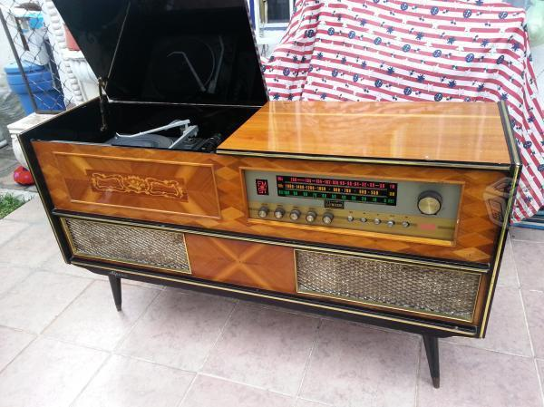
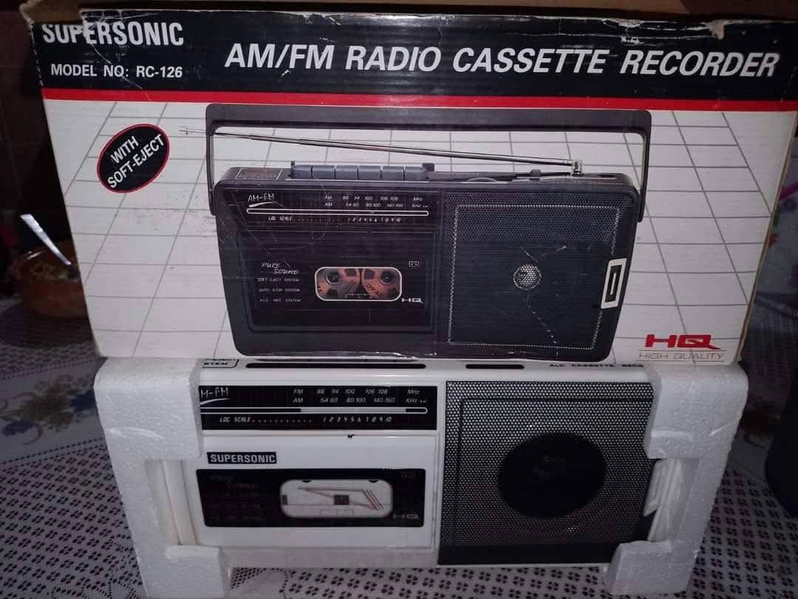
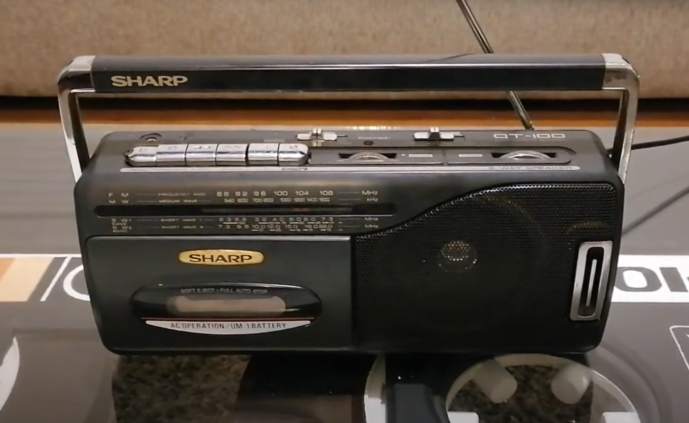

Mi música
17 de Agosto, 2025
Los primeros contactos contactos con la música que recuerdo, son de poco antes de ingresar al Kinder. Son recuerdos vagos y sin detalle, pero si me pongo a hacer memoria del contexto en el que escuchaba la música, puedo recordar algunas canciones. Como por ejemplo las de Mocedades que le gustaba a Mamita, los Bee Gees que escuchaban Pá y Pollo, Leti escuchaba música de Mijares mientras limpiaba la casa, y Lucha ponía canciones de Flans 🤭
Y aunque no tengo recuerdos anteriores a eso, me han dicho que me gustaba mucho la canción de "Pancho Lopez", con los Dinners, la de "Adiós amor" de Mocedades y algunas otras.
Me gustaba mucho poner discos de vinilo en la consola de Mima, mis recuerdos de ese aparato son tan vívidos que logré encontrar una foto en internet del modelo exacto de esa consola.

Intentar recordar cosas que sucedieron antes de que cupliera los 5 o 6 años es algo confuso pero lo poco que puedo rescatar es eso. Me imagino que todos nos pasó, que nuestras primeras canciones estaban determinadas por lo que se escuchaba en nuestro entorno, lo que provocó que se empezara a generar un gusto por esa música.
06 de Septiembre, 2025
No sé si tu recuerdes las grabadoras que teníamos. Me sorprende que desde los 6 o 7 años ya manejabamos bien las grabadoras y los cassettes, hoy en día los niños no saben nada más allá del celular. Hace unos días me propuse a buscar imagenes de nuestras grabadoras según lo que yo recordaba. Y encontré un par de fotos, una de la mía y una de la tuya.


La de Petaca no me acuerdo de que marca era, pero creo recordar vagamemte que era Panasonic o Sony. De lo unico que me acuerdo bien es que esa grabadora de Petaca se quemó el dia que casi se incendia el cuarto. 🤭
← Volver a Historias